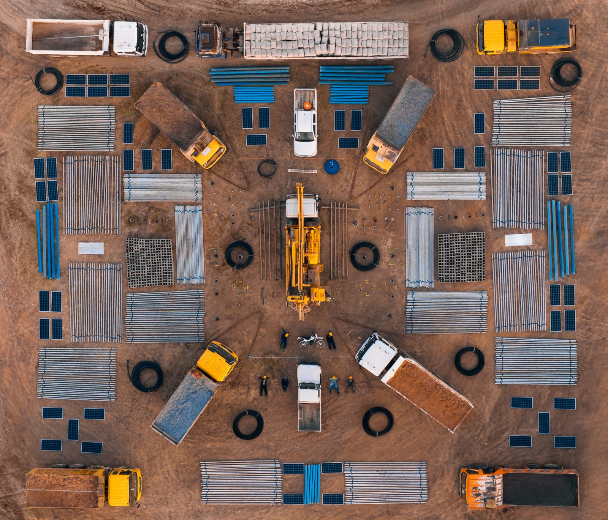

After a decade of indulging his darkest vices as a nightclub promoter, Scott Harrison spent two years on a hospital ship off the coast of Liberia, saw the effects of dirty water firsthand, and came back to New York City on a mission.
Having seen the effects of dirty water firsthand, Scott turned his full attention to the global water crisis and the (then) 1.1 billion people living without access to clean water. He established a small core team in a tiny Manhattan apartment and created charity: water.
Sixteen years later, with the help of more than 1 million supporters worldwide, charity: water has raised over $740 million and funded over 121,000 water projects in 29 countries. When completed, those projects will provide over 16.9 million people with clean, safe drinking water.
We work with local experts and community members to find the best sustainable solution in each place where we work, whether it’s a well, a piped system, a BioSand Filter, or a system for harvesting rainwater. And with every water point we fund, our partners coordinate sanitation and hygiene training, and establish a local Water Committee to help keep water flowing for years to come.
We work with local partners to fund water, sanitation, and hygiene (WASH) programs for rural communities around the world. But our work doesn’t stop when construction ends. We remain committed to monitoring, evaluation, and maintenance to ensure that these programs operate sustainably for years to come.
Our local partners select water point locations based on a variety of factors like geography, assessment of need, community participation, and long-term sustainability.
In addition to the construction process, local partners spend months establishing community buy-in, promoting safe hygiene practices, and building water committee capacity to manage projects.
To ensure that water continues to flow for years to come, we empower local leaders, use strong operations and maintenance structures, collect data on specific WASH indicators, and implement innovative sensor technology.
Skilled laborers dig up to 15 meters by hand to reach aquifers below.
A drilling team drills deep into the earth to reach fresh aquifers.
Gutters on rooftops direct the flow of rainfall into a sanitary holding tank.
The force of gravity feeds water into a community from an elevated source.
Networks of pipes supply water to different community tap stands.
Installed treatment systems remove contaminants from existing systems.
Layers of sand and microbacterial film filter out contaminants.
A system captures and safely stores pure water from a natural spring.
Covered shelters provide safety and privacy for bathroom users.